Handles to derived datatypes can be passed to a communication call wherever a
datatype argument is required.
A call of the form MPI_SEND(buf, count, datatype , ...), where
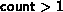
, is interpreted as if the call was passed a new datatype
which is the
concatenation of count copies of datatype.
Thus,
MPI_SEND(buf, count, datatype, dest, tag, comm) is equivalent to,
MPI_TYPE_CONTIGUOUS(count, datatype, newtype) MPI_TYPE_COMMIT(newtype) MPI_SEND(buf, 1, newtype, dest, tag, comm).Similar statements apply to all other communication functions that have a count and datatype argument.
Suppose that a send operation MPI_SEND(buf, count, datatype, dest, tag, comm) is executed, where datatype has type map,

and extent extent. (Empty entries of ``pseudo-type''
MPI_UB and MPI_LB are not listed in the type map, but
they affect the value of extent.)
The send
operation sends  entries, where entry
entries, where entry  is at location
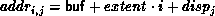
is at location
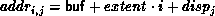
and has type typej, for 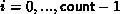 and j = 0 ,..., n-1. These entries need not be contiguous, nor distinct; their order can be arbitrary.
The variable stored at address addri,j in the calling program
should be of a type that matches typej, where
type matching is defined as in section Type matching rules
.
The message sent contains
entries, where entry
 has type typej.
has type typej.
Similarly, suppose that a receive operation MPI_RECV(buf, count, datatype, source, tag, comm, status) is executed, where datatype has type map,

with extent extent. (Again, empty entries of ``pseudo-type''
MPI_UB and MPI_LB are not listed in the type map, but
they affect the value of extent.)
This receive operation receives
 entries, where entry
entries, where entry  is at location
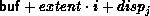
is at location
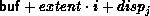
and has type typej. If the incoming message consists of k elements, then we must have 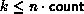 ; the 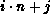 -th element of the message should have a type that matches typej.
Type matching is defined according to the type signature of the corresponding datatypes, that is, the sequence of basic type components. Type matching does not depend on some aspects of the datatype definition, such as the displacements (layout in memory) or the intermediate types used.
Example
This example shows that type matching is defined in terms of
the basic types that a derived type consists of.
... CALL MPI_TYPE_CONTIGUOUS( 2, MPI_REAL, type2, ...) CALL MPI_TYPE_CONTIGUOUS( 4, MPI_REAL, type4, ...) CALL MPI_TYPE_CONTIGUOUS( 2, type2, type22, ...) ... CALL MPI_SEND( a, 4, MPI_REAL, ...) CALL MPI_SEND( a, 2, type2, ...) CALL MPI_SEND( a, 1, type22, ...) CALL MPI_SEND( a, 1, type4, ...) ... CALL MPI_RECV( a, 4, MPI_REAL, ...) CALL MPI_RECV( a, 2, type2, ...) CALL MPI_RECV( a, 1, type22, ...) CALL MPI_RECV( a, 1, type4, ...)Each of the sends matches any of the receives.
A datatype may specify overlapping entries. The use of such a datatype in a receive operation is erroneous. (This is erroneous even if the actual message received is short enough not to write any entry more than once.)
A datatype may specify overlapping entries. If such a datatype is used in a receive operation, that is, if some part of the receive buffer is written more than once by the receive operation, then the call is erroneous.
Suppose that MPI_RECV(buf, count, datatype, dest, tag, comm, status) is executed, where datatype has type map,
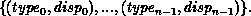
The received message need not fill all the receive buffer, nor does it need to fill a number of locations which is a multiple of n. Any number, k, of basic elements can be received, where 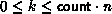 . The number of basic elements received can be retrieved from status using the query function MPI_GET_ELEMENTS.
MPI_GET_ELEMENTS( status, datatype, count)
[ IN status] return status of receive operation (Status)
[ IN datatype] datatype used by receive operation (handle)
[ OUT count] number of received basic elements (integer)
int MPI_Get_elements(MPI_Status *status, MPI_Datatype datatype, int *count)
MPI_GET_ELEMENTS(STATUS, DATATYPE, COUNT, IERROR)
INTEGER STATUS(MPI_STATUS_SIZE), DATATYPE, COUNT, IERROR
The previously defined
function, MPI_GET_COUNT (Sec. Return status
), has
a different behavior.
It returns the number of ``top-level
entries'' received, i.e. the number of ``copies'' of type
datatype.
In the previous example, MPI_GET_COUNT
may return any integer value k, where
.
If MPI_GET_COUNT returns k, then the number of basic
elements received (and the value returned by
MPI_GET_ELEMENTS)
is 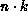
. If the number of basic elements received is not a
multiple of n, that is, if the receive operation has not received an
integral number of datatype ``copies,'' then
MPI_GET_COUNT returns the value MPI_UNDEFINED.
Example
Usage of MPI_GET_COUNT and MPI_GET_ELEMENT.
...
CALL MPI_TYPE_CONTIGUOUS(2, MPI_REAL, Type2, ierr)
CALL MPI_TYPE_COMMIT(Type2, ierr)
...
CALL MPI_COMM_RANK(comm, rank, ierr)
IF(rank.EQ.0) THEN
CALL MPI_SEND(a, 2, MPI_REAL, 1, 0, comm, ierr)
CALL MPI_SEND(a, 3, MPI_REAL, 1, 0, comm, ierr)
ELSE
CALL MPI_RECV(a, 2, Type2, 0, 0, comm, stat, ierr)
CALL MPI_GET_COUNT(stat, Type2, i, ierr) ! returns i=1
CALL MPI_GET_ELEMENTS(stat, Type2, i, ierr) ! returns i=2
CALL MPI_RECV(a, 2, Type2, 0, 0, comm, stat, ierr)
CALL MPI_GET_COUNT(stat, Type2, i, ierr) ! returns i=MPI_UNDEFINED
CALL MPI_GET_ELEMENTS(stat, Type2, i, ierr) ! returns i=3
END IF
The function MPI_GET_ELEMENTS can also be used after a probe to find the number of elements in the probed message. Note that the two functions MPI_GET_COUNT and MPI_GET_ELEMENTS return the same values when they are used with basic datatypes.
[] Rationale.
The extension given to the definition of MPI_GET_COUNT seems
natural: one would expect this function to return the value of the
count argument, when the receive buffer is filled.
Sometimes datatype represents
a basic unit of data one wants to transfer,
for example, a record in an array of records (structures).
One should be able to find out how many components were received
without bothering to divide by the number of elements in each
component. However, on other occasions, datatype is used to
define a complex layout of data in the receiver memory, and does not represent
a basic unit of data for transfers. In such cases, one needs to use
the function MPI_GET_ELEMENTS.
( End of rationale.)
[] Advice
to implementors.
The definition implies that a receive cannot change the value of
storage outside the entries defined to compose the communication
buffer.
In particular, the definition implies that padding space in a structure
should not be modified when such a structure is copied from one process to
another. This would
prevent the obvious optimization of copying the structure, together
with the padding, as one contiguous block.
The implementation is free to do this optimization when it does not
impact the outcome of the computation.
The user can ``force'' this optimization by explicitly including
padding as part of the message.
( End of advice to implementors.)